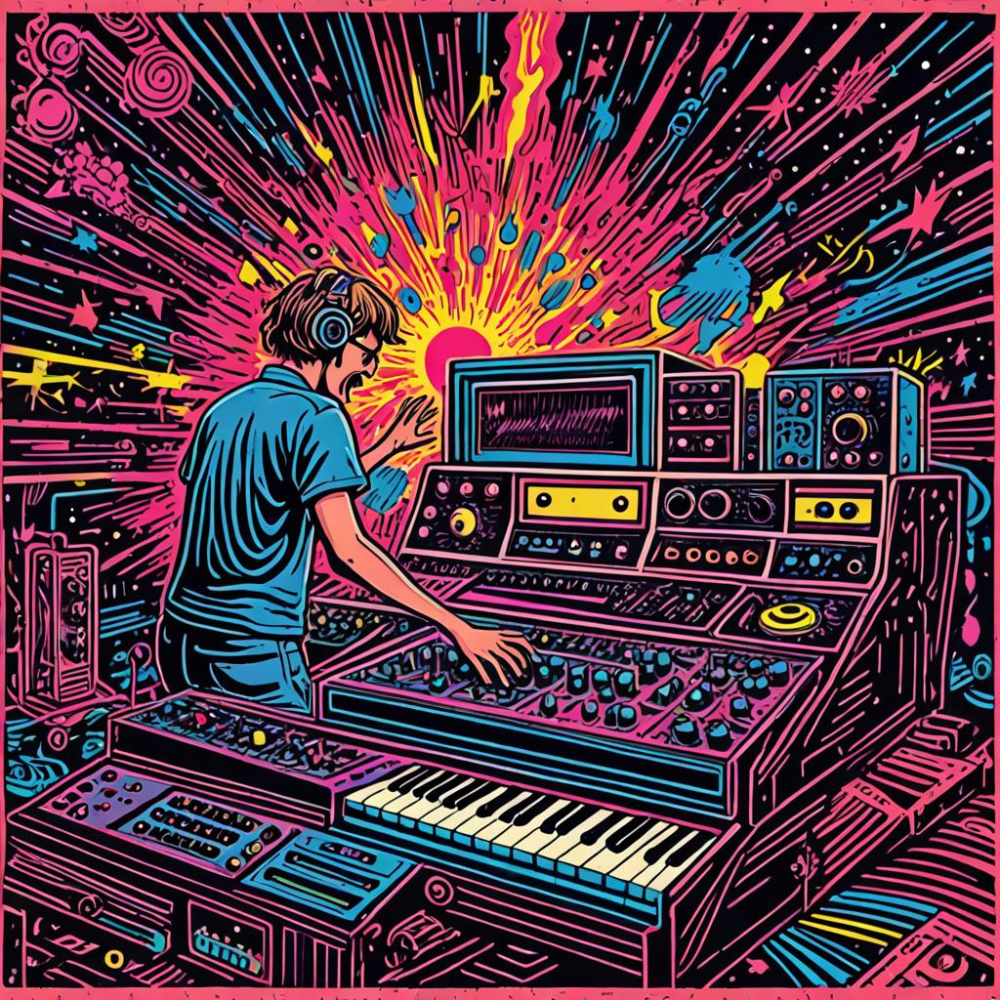

The VERY Expressive Osmose

“synthesizer dreamland. explosions of joyful expression. expressive happiness. dancing music. colorful. neon. modular synth. eurorack. cartoon, woodcut, linocut.” - dreamshaper-xl-turbo
I’ve been really curious about the Expressive Osmose keyboard for a while now. So, I picked one up yesterday.
Basically all I have to say is: HOLY WOW.
I might have more to say later, and I may add notes to this post about the osmose as I go through the 7 stages of osmose ownership.
For, now I need to get back to pitch bending every note into a tornado of meowing cats.
Actually, this was the expressive controller/synthesizer I was looking for – reply to Obi-Wan Kenobi
Early afternoon update. I have been noodling away roughly alphabetically through the 500 presets. I’m just starting the ones that begin with C. It’s easy to get lost in fun for hours doing this. Not that I want to take the fun away, but I should start integrating this a little bit more into my setup. Probably the next step will be recording the noodles.
Here are some notes so far on playing the osmose. These are notes to self to help me progress through this thing.
Velocity and pressure
The osmose has several dimensions of expressive control. Like most standard midi keyboards it has note velocity, but it also has pressure, aftertouch, and pitch bend for each key independently, with 24 voice polyphony!

A digression into my past life of utterly not liking midi keyboards. I grew up playing a Roland 5600 with a MC-300 (or 500?) and MT-32 (where much was had with the orchestra hit sound). I would go to my piano teacher’s houses for lessons on a real piano, and practice on the midi piano at home. It was fun to make different sounds on the roland, but I always wanted a real piano as a kid.
I still love the action of a real piano. It turns out I also love the action of my rhodes 88 key electric piano. But, I have never loved the action of any midi keyboard that I have ever owned or played. Not the hammer action ones. Not any of them.
In 2019 I got to play a CS-80 one time in Melbourne and I could not believe how much a difference polyphonic aftertouch made. It’s so sad that midi keyboards suck so much for so long.
Maybe I didn’t spend enough time with the other midi keyboards that I didn’t like. Most recently I brought home a Nord 88 key stage piano to use a controller, and it was just ok…one key broke, and there is an uncurable noisy power supply. Plus, these things never feel like an instrument to me, so they just constantly suck joy.
I have tried to adjust velocity curves and find something that seems better, but never got there. It’s possible I just don’t like how velocity is usually implemented, or that velocity is missing something for me. In any case, when I play on my acoustic or electric piano, even though both keyboards have very different action, they are both very playable and immediately expressive. I don’t have think about it, the expression is just there.
This is what I now adore about the osmose. The expression is right there at my finger tips.
I really like that they have pressure per key too.
Squishy goodness
It’s hard to describe what the action feels like. There is some initial resistance to the keys, but not too much. This is great for light and/or bouncy tapping and slowly applying pressure to the keys. Many of the presets make sound from pressure alone, and sometimes different sounds from pressure or velocity.
The aftertouch is the best feeling aftertouch I’ve ever played. There is a slight difference in resistance when you get to aftertouch land, and way more travel down into the aftertouch than on typical midi keyboards. It feels like the key keeps going down into it’s aftertouch home, where it belongs sometimes.
Similarly, the key’s pick up side-to-side wiggling throughout the travel of the key and into aftertouch range. This parameter is usually applied to pitch bend. It get’s a bit easier to wiggle when the key is pressed down a bit, but over all it’s very natural.
Presets
Lots of juicy stuff in the presets, all powered by EaganMatrix. It’ll be a while before I go into that thing.
There are a few onboard effects like a reverb and delays. The reverb can sound pretty good, especially with extend “on”.
I don’t like menu diving, and it’s pretty fast to make changes to sounds and to sensitivity parameters of the controller. Very happy with that.
Need to go play it some more.
MPE controller
I’ve got it hooked up to the OB-6 and it works very well. Whenever I need the sound to go to 11, I just back it up with some OB-6. The more the scarier.
Recording midi in ableton live
I was recording for a bit with one midi track and one audio track. Things seemed to be going fine, but Ableton started freezing up once in a while, and the midi recordings were sometimes really off. The likely culprit is me trying to record MPE midi for the first time.
It seems there are some MPE midi settings that are important, like from this video
Still crashing ableton a bunch. A problem for another day.